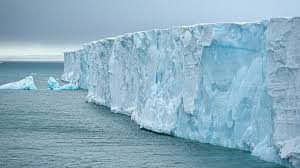
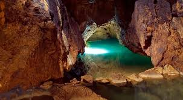

Debido a su alto calor específico y a su alto calor de vaporización, el agua es un buen amortiguador de los cambios bruscos de temperatura.
El elevado calor específico del agua (1cal/g.ºC) hace que haya que transferir mucho calor a un gramo de agua para subir su temperatura en 1ºC.Esto hace que el agua pueda absorber grandes cantidades de calor mientras que su temperatura solo sube ligeramente.
Esto permite que el contenido acuoso de las células sirva de protección a las sensibles moléculas orgánicas ante los cambios bruscos de temperatura.
Por el alto calor de fusión al agua le cuesta más congelarse que otras sustancias, lo que disminuye la posibilidad de congelación de los seres vivos.
Su alto calor de vaporización permite a los seres vivos refrigerarse disminuyendo mucho su temperatura corporal evaporando agua en la transpiración.
El calor que se desprende en los procesos metabólicos no se acumula en los lugares donde se produce, sino que se difunde en el medio acuoso y se disipa finalmente hacia el medio externo.
La anómala variación de la densidad con la temperatura (densidad máxima a 4ºC) determina que el hielo flote en el agua, actue como aislante térmico y en consecuencia, posibilite el mantenimiento de los océanos.
La menor densidad del agua sólida permite la vida acuática bajo el hielo, que es un aislante del frío que ayuda a mantener la temperatura del agua líquida sobre la que flota por encima del punto de congelación.
Las aguas terrestres se suelen clasificar siguiendo un criterio geográfico:
Son las que constituyen océanos y mares. Ocupan el 70% de la superficie del globo terrestre.
También se consideran aguas oceánicas las del casquete polar ártico.
En el hemisferio norte se encuentran el 70% de las tierras emergidas, mientras en el hemisferio sur las aguas oceánicas ocupan el 80%, por lo que se conoce como hemisferio oceánico.
Las aguas oceánicas desempeñan un papel fundamental para mantener el equilibrio en el planeta: mares y océanos son responsables de la regulación del clima.
La producción primaria de las aguas oceánicas es muy superior a la de los continentes.
El ser humano obtiene gran cantidad de alimentos y otros recursos de los océanos.
Océano:
es una gran extensión de agua salada sobre la superficie terrestre que rodea los continentes.
Mar:
es la parte de un océano que bordea el contorno de los continentes, está dentro de un continente o es una extensión oceánica rodeada por islas.
Se reparten en compartimentos muy definidos con características diferentes.
| Glaciares | Aguas subterráneas |
|---|---|
| Son grandes acumulaciones de hielo que se encuentran en los polos y en las altas montañas.
Glaciares de Casquete o Polares: Son enormes masas de hielo de hasta a 1700 m de espesor sobre los continentes en las zonas polares.En el borde junto al mar se rompen dando lugar a grandes bloques de hielo flotando en el agua conocidos como Icebergs. Glaciares de Valle o Alpinos: Se forman en zonas de alta montaña en las que la nieve se acumula en depresiones llamadas circos y luego desciende por el valle en forma de lengua de hielo.  |
Es el agua que se encuentra bajo la superficie terrestre y que se origina por la infiltración en el terreno del agua de lluvia, de deshielo o de las aguas superficiales.
El agua se introduce hacia el interior del terreno cuando está formado por rocas permeables ocupando sus poros o huecos y se detiene cuando encuentra una capa impermeable.  |